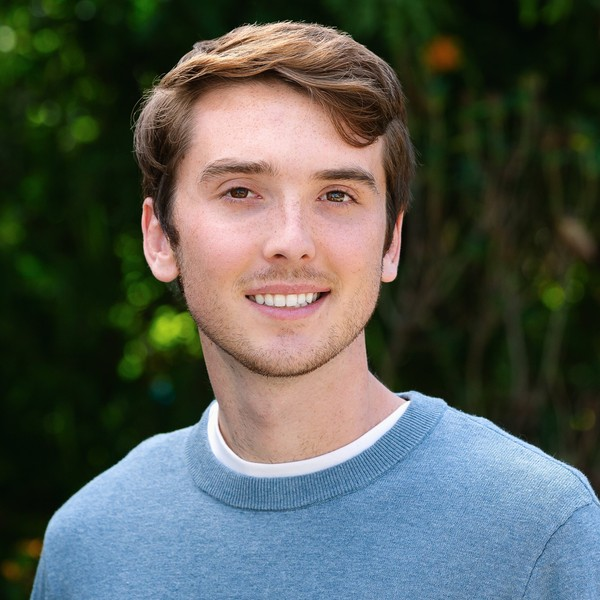

Hey 👋, I'm Sean. I'm years into a computer science PhD at the University of Washington, advised by Mark Oskin. I also work full time as a researcher at AMD Research and Advanced Development (RAD).
My research interests generally revolve around high performance computing, with an emphasis on parallel programming and heterogeneous architectures. I strongly believe that the future of computing will be significantly impacted by specialized hardware accelerators. I'm interested in optimizing application performance on these systems and enhancing developer interaction through improved compiler tools and programming models.
Mar 2026
Joined AMD RAD full time as a Senior Software Engineer, continuing research on GPU layout abstractions.
Nov 2025
Collaborated with Stanford's Hazy Research lab on HipKittens.
Jun 2025
Started a research associate internship at AMD RAD, bringing layout abstractions to AMD Instinct GPUs, advised by Muhammad Osama.
Apr 2025
Gave a developer talk at TT-DevDay on improving the programming model of Tenstorrent AI accelerators.
Sep 2024
Started my PhD at UW.
Jan–Aug 2024
Worked as a Junior Specialist at UCSC, leading work on the Ecoscape project, a tool to visualize and model the habitat connectivity of birds to inform conservation and climate efforts.
Feb 2024
Attended Vulkanised 2024, where Devon McKee gave a presentation on work I partially collaborated on.
Dec 2023–Jan 2024
Completed a winternship at Trail of Bits with Tyler Sorensen, investigating security vulnerabilities of multi-tenant GPU systems.